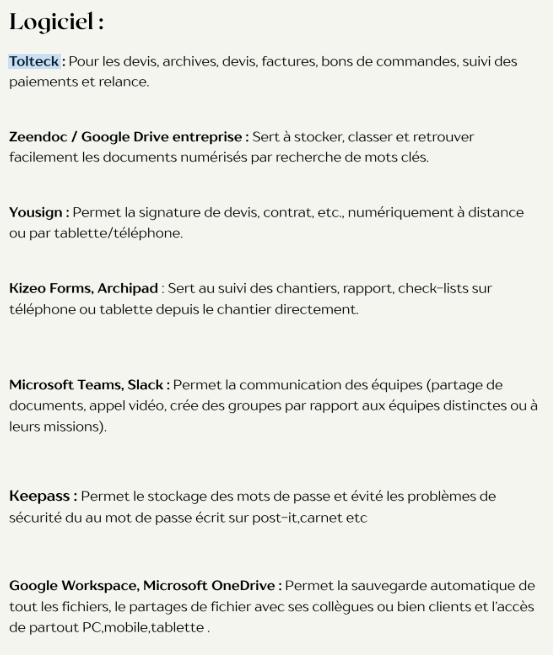
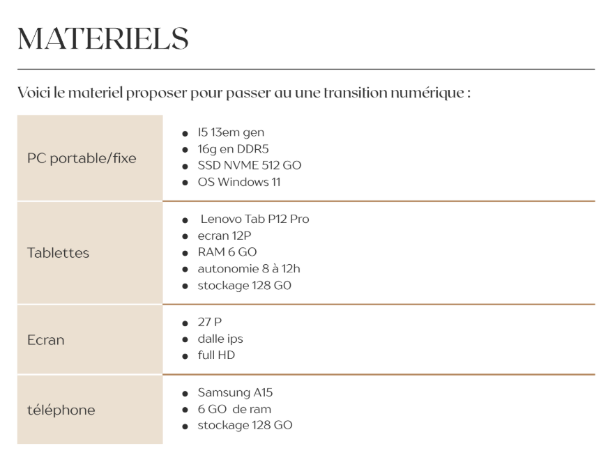
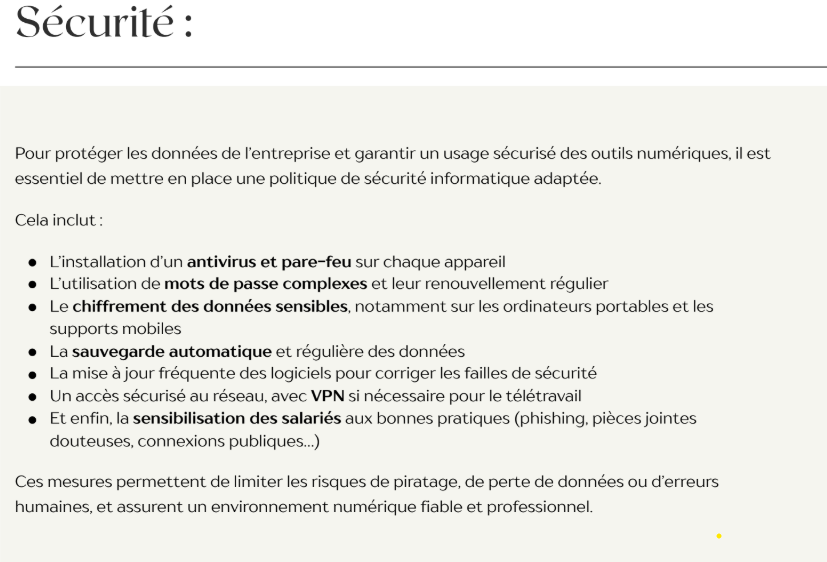
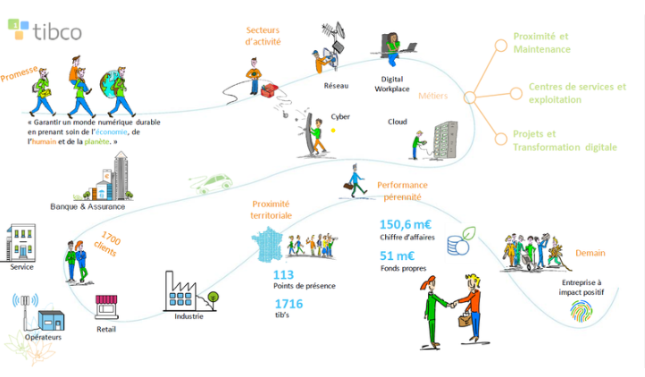
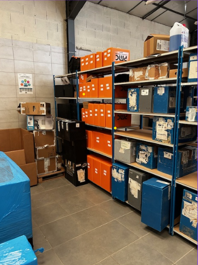
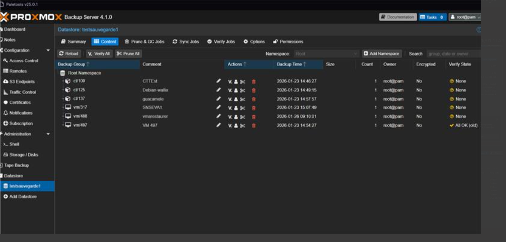
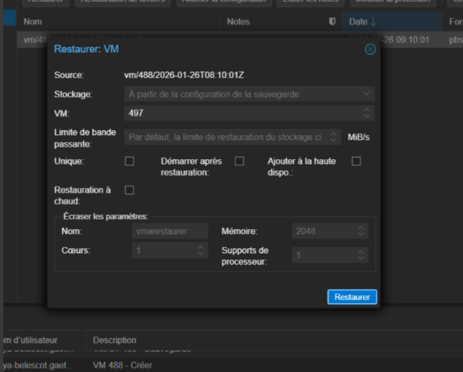
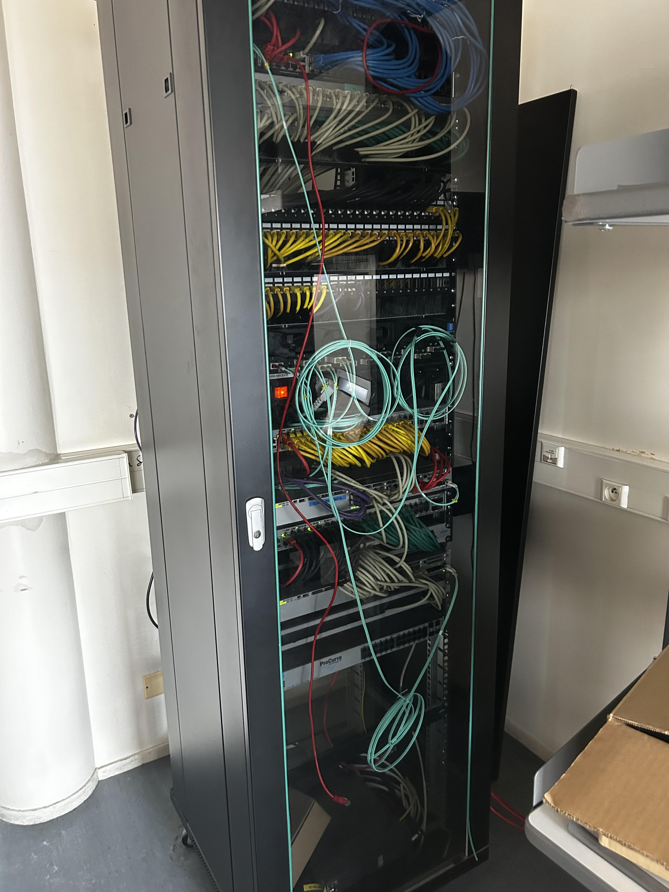

Détails de mes Stages (BTS)
Ces expériences m'ont permis d'intervenir sur des infrastructures plus complexes, du déploiement en entreprise de services (ESN) à l'administration réseau complète d'un établissement scolaire.
1. Tibco Services - Technicien
Période : 26 mai au 26 juin
Mon stage chez Tibco a été une opportunité privilégiée pour découvrir l'organisation d'une entreprise engagée dans le numérique responsable. J'ai pu observer comment l'écologie est intégrée au cœur de leur structure.
- Intervention sur site pour réparation ou remplacement de matériel.
- Mise en place de solutions pour réduire l'impact écologique des clients.
- Relations clients et conseil technique en direct.
🛠️ Mission choisie : Objectif 0% papier pour l'entreprise InnovAlu
J'ai choisi de mettre en avant cette mission car elle est au cœur de l'identité de Tibco. Mon rôle était d'accompagner l'entreprise dans la réduction de son empreinte carbone en proposant des solutions 100% numériques afin de réduire la consommation de papier.

Ils sont importants pour garantir l'objectif du 0% papier : Tolteck pour les devis, Google Drive pour le stockage en ligne, Yousign pour les signatures à distance, ou encore KeePass pour sécuriser la gestion des mots de passe sans utiliser de papier.

est indispensable afin d'effectuer l'objectif 0% papier car tout doit ce faire numériquement. J'ai donc réaliser des configurations d'ordinateur afin de permettre le meilleur environnement de travaille pour les salariès

est donc indispensable en passant au numérique les données des utilisateurs et des clients sont facilement exposés sans une bonne sécurité. c'est pour cela que j'ai proposé l'installation d'antivirus sur les postes des salariés, l'obligation d'utilisé un mot de passe fort ou encore la sensibilisation des salaries au risques de cyber-attTout cela en suivant les conseils de la CNIL.
📸 Annexes : Vie chez Tibco


2. Service Informatique - Lycée Suzanne Valadon
Période : Janvier 2025 à Février 2025
Au sein de mon établissement, j'avais déja l'experience du matériel à disposition donc j'ai perdu moin de temps à m'adapter à la situation.
- Administration de Serveur
- configuration d'un switch et de vlan
- teste de réstauration de vm
🛠️ Mission choisie :teste de restauration de VM proxmox avec Proxmox Backup Server (PBS)
J’ai commencé par installer avec une clé rufus le serveur PBS sur une machine, ensuite j’ai configuré le serveur. La deuxième étape était de configurer un switch et de crée des vlans afin de garantir la sécurité des données administratives. L'objectif était d'isoler le flux "Élèves" du flux "Administration" pour éviter toute intrusion sur le serveur. J’ai fini par le teste de restauration de VM sur le PBS en sauvegardant une VM sur le serveur proxmox VE et en la supprimant.



📸 Annexes : Administration au Lycée
